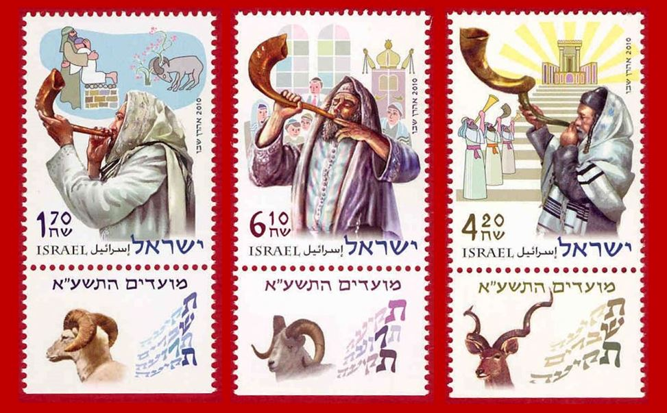
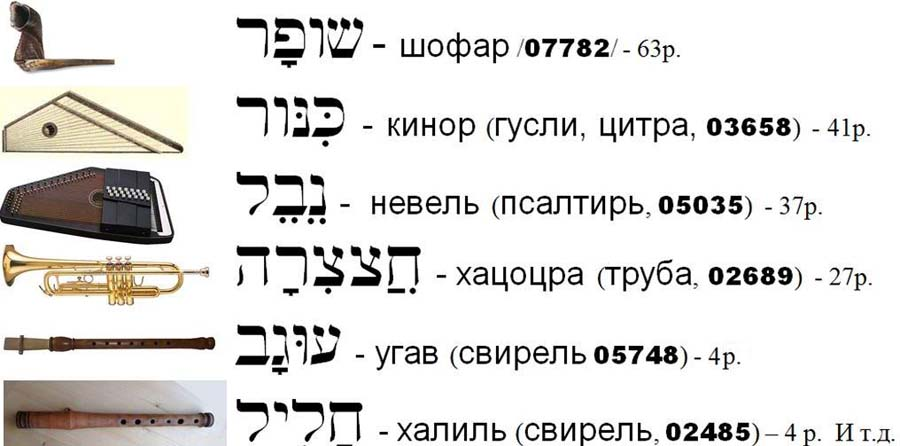

Арт-мидраш · Праздники в Библии
Шофар - единственный в своем роде!
Шофар - единственный в своем роде! Нет другого такого музыкального инструмента, который на протяжении всей своей длительной истории, ок. пяти тысяч лет, не притерпел бы абсолютно никаких изменений! Более того, всякая попытка его "усовершенствования" сделает его практически некошерным для исполнения заповеди трубления.
Заповедь эту сыны Израиля получили от Всевышнего около трех с половиной тысяч лет тому назад. Все остальные инструменты без исключения, от костяной флейты до первобытных ударных, не говоря уже о струнных, постоянно претерпевают принципиальные и косметические изменения. Развиваются технологии, появляются новые материалы. Все это побуждает человеческий гений находить все более совершенное звучание и форму.
В то же время шофар, при всей своей абсолютной первобытной простоте (рог кошерного животного) как будто не обращая внимание на "соревнование" остальных в красоте и изяществе, не подверженный моде и влияниям, утверждает свою верность изначальной, первозданной, нерукотворной сущности. Он представляет собой символ незыблемого, неизменяемого, постоянного, существующего всегда Творца. Этот инструмент и сотворен Самим Творцом.

Когда я взялся за эту тему "Шофар" своей задачей прежде всего я видел исследование рога, как музыкального инструмента и его место в еврейской традиции.
Я пытаюсь понять, что значит слушать голос шофара? Что ожидать в этом слышании? В каком направлении трубить, как расположить сердце, когда трубишь и слушаешь?
В свое время меня очень заинтересовала символика музыкальных инcтрументов в ТАНАХе. Об этом написано немало и тем не менее, остается много вопросов. Мне интересно понять инструменты "изнутри", начиная с языка иврит, первоначального значения их названий, когда имена и названия вещей несли в себе суть этих вещей, их направление, послание.
Иногда приходится слышать скептические замечания о правомерности причисления шофара к музыкальным инструментам. Но ведь музыка - это не только созвучия, гармонии, пассажи, но, прежде всего, образы, ощущения, откровения ею рождаемые. Это, то, что потрясает в шофаре и том звуке, который он из себя исторгает. Он способен производить в нашей душе нечто, очень важное, пробуждать чувство трепета, благоговения пред Творцом, соединять тысячелетия, простираться из времени в вечность. В этом смысле, шофар музыкален настолько, насколько это вообще возможно…
Именно с шофара мне важно было начать по нескольким соображениям.
Во-первых есть нечто, заставляющее нас особенно внимательно присмотреться к этому инструменту - именно его избрал Всевышний, в инструмент СЕБЕ. Ни о каком другом муз. инструменте в Библии не сказано, что Творец неба и земли его использовал. Все другие инструменты предназначены служить Господу, символизируя предстояние человека пред Создателем. В определенном смысле, голос Шофара - символизирует голос Бога. Посредством именно этого инструмента Создатель посылает нам некое, исключительной важности, послание.

Нет другого муз. инструмента в Писании, о котором говорилось бы так много, как о шофаре. Возможно, вам трудно в это поверить. Но виной тому - неадекватные переводы Библии (шофар заменен другим инструментом - трубой).
Даже, если сравнивать просто кол-во упоминаний в ТАНАХе, то шофар здесь чемпион:

Нет другого музыкального инструмента, который был бы средоточием библейского праздника, заповедь о котором передал Своему народу Сам Всевышний. Шофар - это единственный инструмент, который стоит в центре праздника является его "главным действующим лицом".
Заповедь "О воспоминании трубного звука" ("Зихрон Труа" - Лев.23:24) приглашает нас взять "партитуру" Священного Писания, подобно, меломанам, чтобы вспомнить, всматриваясь и вслушиваясь в великое исполнение этого произведения, которого свидетелями мы были может быть давно, еще в юности...
Кроме того - это самый еврейский из всех музыкальных инструментов. В последнее время разве только скрипка в культуре евреев стала приобретать особенное символическое значение. Но с родословием шофара ей все еще сложно тягаться.
Поняв нечто о шофаре и том, как использует его Всевышний Музыкант, сотворивший всех музыкантов и творческих людей вообще, мы сможем использовать это наше понимание и попытаться приложить его к другим музыкальным орудиям.
см. фильм на эту тему "Голос Шофара"
Высокая ЗАДАЧА ШОФАРА – служить преобразованию, улучшению мира. Думаю, это важнейшая из его функций. Думаю также, задача максимум для всех других инструментов – способствовать восстановлению гармонии мира.